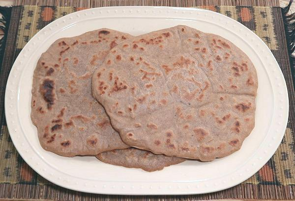
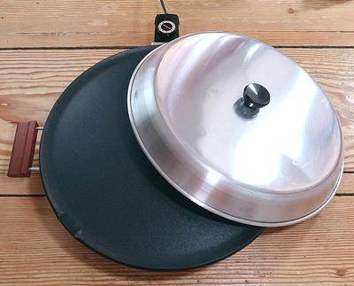
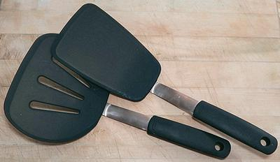
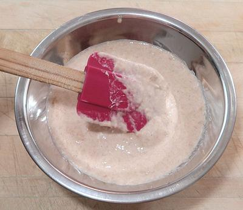
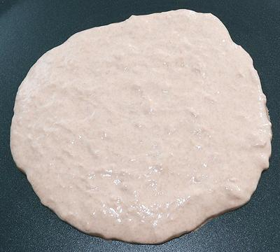
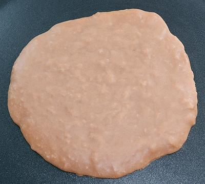
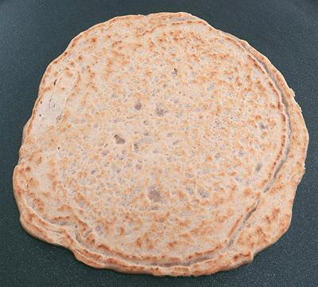
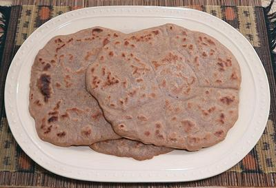

This Lefse griddle was used for this recipe. In Africa,
it would probably made on a circular sheet of iron over a wood fire. A
regular 12 inch iron skillet would work if well seasoned, or a non-stick
pan of similar size. Whatever pan is used, it must have a cover. For
details on this pan see our
Lefse Griddle page.

To safely turn this bread over, you should use two
turners, preferably a wide one to pick up the bread, and another to
control it as it is turned over. If using a non-stick griddle or pan,
these Oxo flexible Silicone turners are excellent. If not using a
non-stick pan, you can use plain metal turners.

The Kicha Batter should be the consistency of a thick pancake
batter. This bowl contains a half recipe, ready to pour onto the griddle.
You will need a spatula to urge it all out of the bowl. This batter was
made using a light colored whole wheat flour from Bob's Red Mill.

This is the Kicha Batter immediately after dumping onto the
griddle and using wet fingertips to tap it into shape. The cover should be
immediately placed over the pan.

Here the Kicha has been cooked covered until it is completely
darkened on the top and a couple minutes after that point. It can now be
carefully turned over using two turners.

Here the Kicha has been turned over. It will continue to
cook until it has brown spots on the other side.

Here are three Kichas complete and off the griddle.